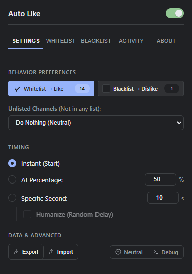
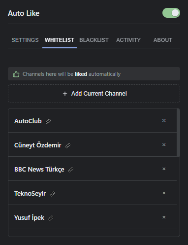
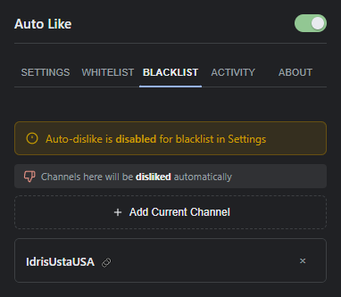
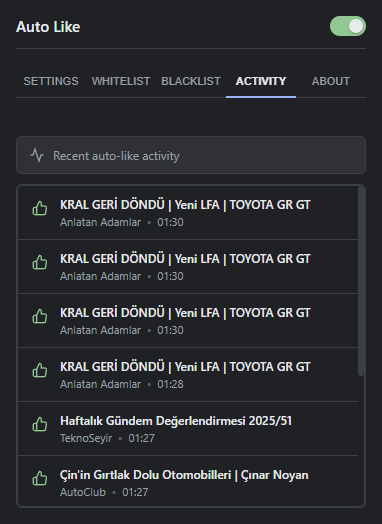
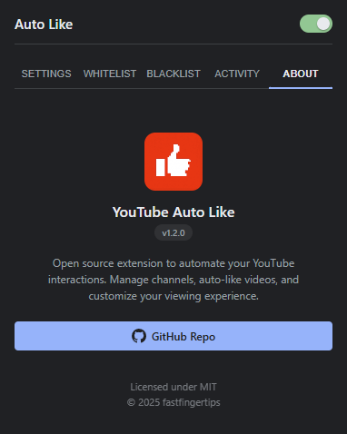

How It Works
When you open a YouTube video, the extension checks the channel against your lists. Whitelisted channels can be liked automatically, blacklisted channels can be disliked automatically, and unlisted channels can stay neutral or follow your default preference.
You can run actions immediately, after watching a percentage of the video, or after a specific number of seconds. The humanize option adds a small random delay when time-based actions are used.
Installation
Chrome / Edge
- Install from the Chrome Web Store, or download the Chrome ZIP from GitHub Releases.
- For ZIP installs, extract the archive and open
chrome://extensions/. - Enable Developer mode, click Load unpacked, and select the extracted extension folder.
Firefox
- Download the Firefox ZIP from GitHub Releases.
- Open
about:debugging#/runtime/this-firefox. - Click Load Temporary Add-on... and select the extracted
manifest.json.
Features
- Whitelist: automatically like videos from trusted channels.
- Blacklist: automatically dislike videos from channels you want to avoid.
- Unlisted channels: choose do nothing, like all, or dislike all.
- Status badge: optionally show whether the current channel is whitelisted, blacklisted, or neutral.
- Activity log: keep recent actions locally, or disable history logging entirely.
- Import / export: back up settings and channel lists as JSON.
Usage
Settings
- Choose how whitelisted, blacklisted, and unlisted channels behave.
- Select instant, percentage-based, or time-based action timing.
- Enable humanize for randomized delay on time-based actions.
Lists
- Use Add Current Channel while watching a video to add the channel.
- Manage whitelist and blacklist entries from their dedicated tabs.
Activity
- Review recent auto-like and auto-dislike actions.
- Open logged videos directly from the activity list.
Permissions
| Permission | Purpose |
|---|---|
storage |
Saves settings, channel lists, and activity logs locally. |
activeTab |
Lets the popup detect and interact with the active YouTube tab. |
youtube.com |
Runs the content script on YouTube video pages. |
Screenshots

Settings
Whitelist
Blacklist
Activity
AboutPrivacy
All settings, lists, and activity logs stay on your device. The extension does not collect personal data or send your data to external servers. Read the full privacy policy.